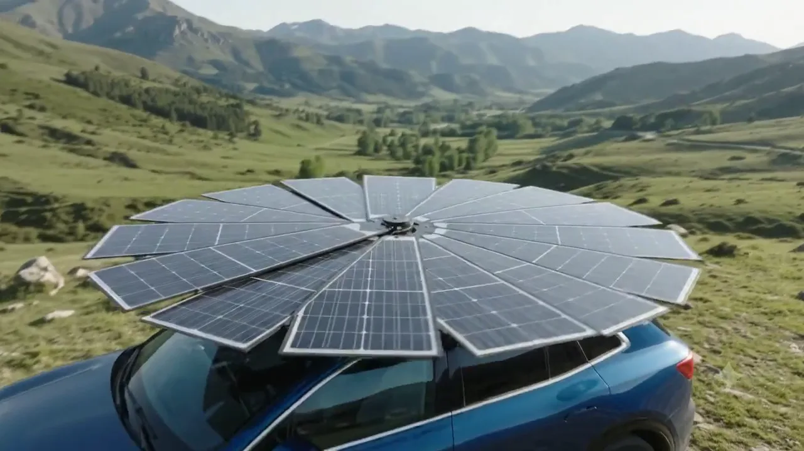
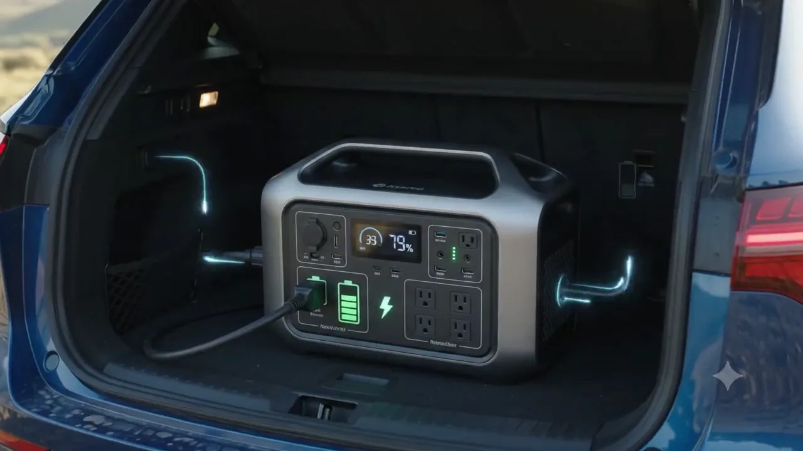
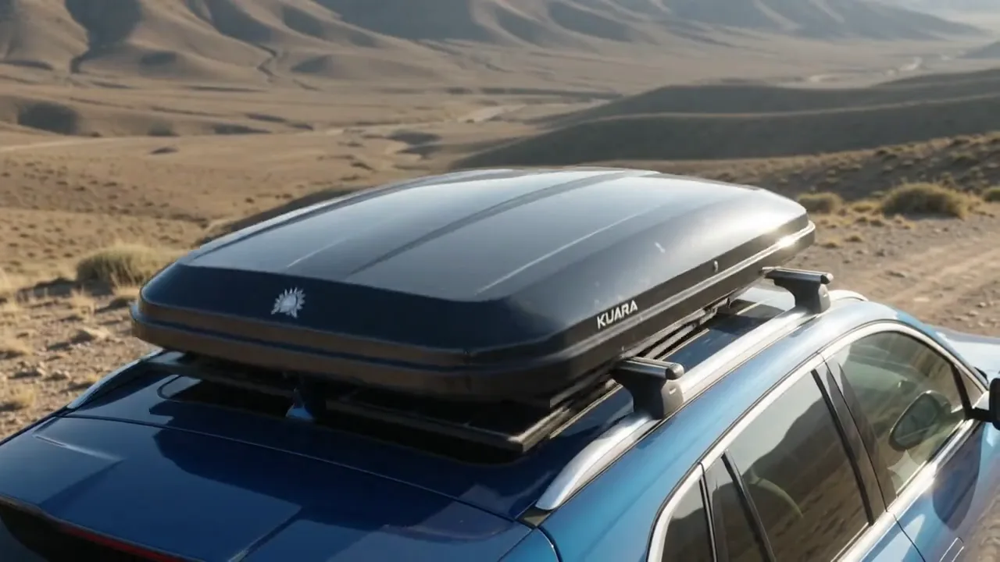

Uma usina fotovoltaica portátil para levar geração de energia a veículos elétricos, operações remotas, campo, emergências e lugares onde a rede simplesmente não chega.
Energia costuma estar presa à infraestrutura. A Kuara muda essa lógica.
Quando a tomada está longe, um eletroposto não existe ou uma operação precisa acontecer em campo, a geração deixa de ser apenas uma questão de custo: vira uma questão de disponibilidade.
Mobilidade
Levar a própria fonte de geração para complementar a autonomia energética de veículos e frotas elétricas.
Infraestrutura
Criar um ponto móvel de energia quando instalar uma solução fixa é lento, caro ou simplesmente inviável.
Kuara em ação
Tecnologia Kuara
Uma plataforma móvel de geração solar.
A proposta da Kuara combina transporte compacto, estrutura fotovoltaica expansível e disponibilização de energia no ponto de uso. O resultado é uma solução concebida para transformar mobilidade em autonomia energética.
Captação fotovoltaica expansível
Superfície solar transportável, aberta no local de utilização.
Energia no ponto de uso
Para recarga e alimentação de cargas compatíveis com a configuração do sistema.
Mobilidade como infraestrutura
O próprio deslocamento do veículo leva a solução até onde a energia é necessária.
Como funciona
Pare. Abra. Gere. Use.
Uma jornada simples de entender — e poderosa para diferentes mercados.
Transporte
A unidade acompanha o veículo em configuração compacta.
Implantação
No destino, a estrutura é aberta para ampliar a área de captação.
Geração
Os módulos convertem irradiação solar em energia elétrica.
Gestão
A eletrônica do sistema direciona a energia conforme a arquitetura disponível.
Aplicação
A energia pode apoiar recarga e outras cargas compatíveis em campo.
Product-market fit
Uma tecnologia. Diferentes missões.
A Kuara nasce na interseção entre mobilidade elétrica e energia off-grid, mas seu valor aumenta quando a mesma plataforma resolve diferentes dores de disponibilidade energética.
01
Mobilidade elétrica
Para quem quer viajar levando uma fonte própria de geração solar e reduzir a dependência exclusiva da infraestrutura fixa de recarga.
Mercado âncora02
Motoristas e frotas
Aplicação para veículos de trabalho, motoristas por aplicativo, locadoras e frotas que valorizam disponibilidade operacional.
B2B + ROI03
Agro e campo
Energia móvel para fazendas, técnicos, inspeções, sensores, comunicação e atividades realizadas longe da rede.
Off-grid04
Emergências e resposta a desastres
Uma fonte móvel para apoiar iluminação, comunicação, informática e outras cargas essenciais quando a infraestrutura local é interrompida.
Impacto público05
Camping e expedições
Energia para viagens, overlanding, motorhomes e aventuras em que autonomia e independência da rede fazem parte da experiência.
B2C aspiracional06
Obras e manutenção
Suporte a equipes móveis de engenharia, utilities, infraestrutura e serviços técnicos temporários em campo.
Operação B2B07
Telecom, pesquisa e missões remotas
Energia para instrumentação, conectividade e equipamentos utilizados por equipes técnicas e científicas longe da infraestrutura convencional.
Alta especialização
Do transporte à energia
Compacta quando viaja. Expansível quando importa.

Implantação fotovoltaica móvel

Energia disponível no ponto de uso

Configuração compacta para transporte
A proposta de valor
Energia onde ela é necessária.
A Kuara não é apenas uma solução para gerar energia solar. É uma forma de deslocar capacidade energética junto com a operação, reduzindo a dependência de um endereço, uma tomada ou uma infraestrutura permanente.
MobilidadeA fonte de geração acompanha a missão.
AutonomiaMais opções quando a infraestrutura é limitada.
VersatilidadeUma plataforma aplicável a diferentes setores.
Energia limpaGeração fotovoltaica no ponto de utilização.
Para quem é
Da estrada à operação crítica.
Pessoa física
Proprietários de veículos elétricos
Buscam liberdade de deslocamento e alternativas para cenários em que a recarga fixa é limitada.
Profissional
Motoristas e operadores de frota
Enxergam energia como parte direta de disponibilidade, produtividade e custo operacional.
Empresas
Agro, utilities e engenharia
Precisam levar equipes e energia para áreas onde não faz sentido instalar infraestrutura permanente.
Setor público
Defesa civil e resposta emergencial
Demandam flexibilidade para restabelecer rapidamente recursos básicos em situações adversas.
Aventura
Camping, motorhome e overlanding
Valorizam autonomia energética para permanecer mais tempo longe de pontos convencionais de energia.
Especialistas
Pesquisa e telecomunicações
Dependem de eletrônica, instrumentação e conectividade mesmo em missões remotas.
Dúvidas frequentes
Entenda a Kuara.
O que é a Kuara Solar?
A Kuara é uma solução de geração fotovoltaica portátil concebida para ser transportada em veículo, implantada no local de uso e utilizada em cenários de mobilidade elétrica e energia off-grid.
A Kuara pode carregar um carro elétrico?
A mobilidade elétrica é uma das aplicações centrais do projeto. A capacidade efetiva de recarga, potência e ganho de autonomia dependem da configuração elétrica e das especificações finais do sistema e do veículo.
A energia pode ser utilizada para outros equipamentos?
Sim, essa é uma das propostas da plataforma. As cargas possíveis dependem da potência, tensão, saídas e arquitetura da versão utilizada. A Kuara pode ser pensada como um hub móvel de energia para diferentes aplicações compatíveis.
A Kuara substitui eletropostos ou a rede elétrica?
O posicionamento mais adequado é complementar: a Kuara amplia as possibilidades de geração e uso de energia em cenários onde a infraestrutura fixa não está disponível, é limitada ou não é conveniente.
Em quais setores a tecnologia pode ser aplicada?
Mobilidade elétrica, frotas, agronegócio, operações remotas, emergências, camping, obras, manutenção, telecomunicações, pesquisa e outras atividades que precisem de energia descentralizada.
Vamos conversar
Sua próxima fonte de energia pode viajar com você.
Conte como você imagina usar a Kuara. A mensagem será preparada para contato direto com a equipe comercial.